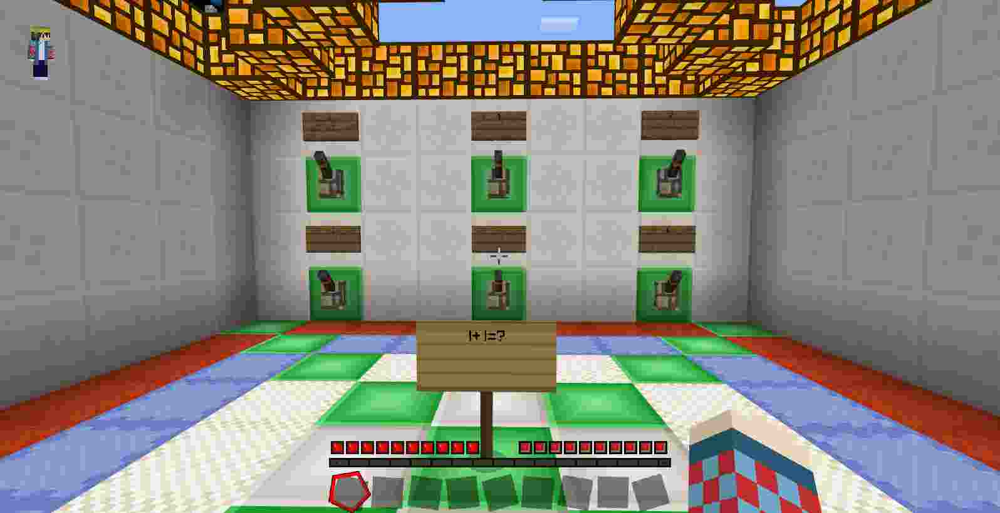
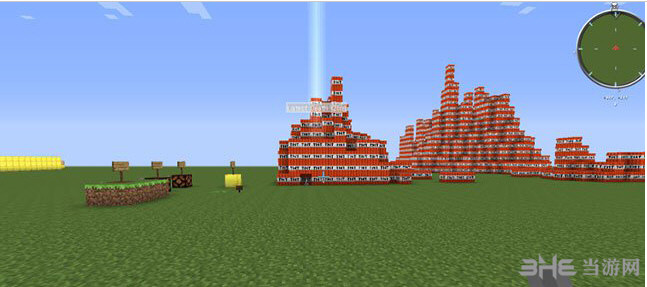
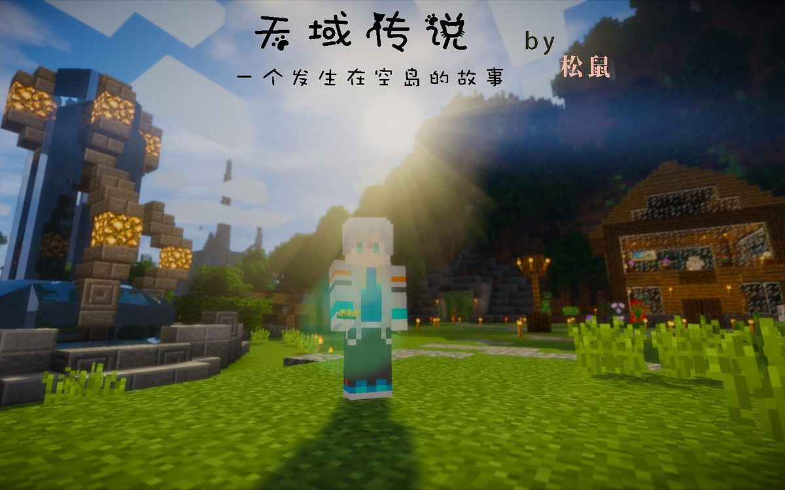

玩腻了原版生存？来试试这些别人做好的地图，解密闯关冒险都有，我玩过觉得不错的才推荐。

MBS Game Jam 参赛作品，基地变成废墟，只有一台收音机陪着你。氛围做得特别好，解谜也不烧脑，一下午能通关。
解密 剧情
春节放假想回家，结果一路上各种怪事发生。轻松解谜向，剧情挺暖的，适合周末没事的时候玩。
解谜 轻松恐怖逃生地图，被困在一艘荒废的深海巨轮上。胆子小的别一个人玩，我晚上玩的时候被突脸吓了一跳。
恐怖 逃生
空岛冒险地图，国产的老地图了，但是剧情和建造都不错。我大学的时候玩的，现在回头看还是挺有意思。
冒险 空岛解密和闯关融合的地图，1.17+ 版本能玩。从简单的找按钮开始，越往后越难，适合有点基础的玩家。
闯关 解谜一整个系列，从逃离到探险，内容量很大。我看 B 站主播玩过，自己没通关，太费时间了。
大型 系列不算地图算服务器小游戏，但是太经典了。花雨庭、Hypixel 都有，我打了几百局，最高段位钻石。
多人 PVP在空岛上捡资源打别人，最后一个站着的赢。EaseCation 人多，延迟也低，国内玩家推荐。
多人 空岛不是官方地图，是 B 站主播们玩的那种，100 个玩家追捕 7 个 UP 主。看着比自己玩有意思，推荐去看视频。
娱乐 视频